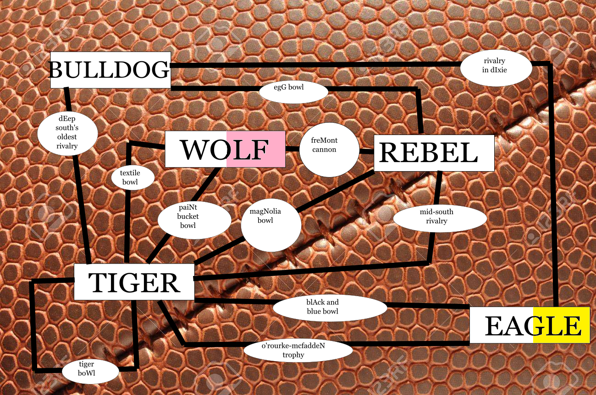

Like Robert De Niro in The Irishman, these answers have undergone de-aging technology--in each, the substring AGE has been replaced with a single letter. In order of the given blanks:
| STONED | STONE AGE | D |
| OUTRE | OUTRAGE | E |
| PASS AWAY | PASSAGEWAY | A |
| DAMN | DAMAGE | N |
| STORM | STORAGE | M |
| ANT | AGENT | A |
| ERR | EAGER | R |
| COURT | COURAGE | T |
| WIRED | WAGERED | I |
| LINENS | LINEAGES | N |
The answer is DEAN MARTIN.
Each of these answers is something that's made of two pieces or parts joined together or mixed in some way. Enter their component parts in the blanks and read the highlighted letters.
| SEMICOLON | COMMA | PERIOD | M | I |
| CONGRESS | SENATE | HOUSE OF REPRESENTATIVES | S | T |
| CRYPTIC CLUE | DEFINITION | WORDPLAY | E | R |
| SLOWBRO | SHELLDER | SLOWPOKE | D | E |
| CZECHOSLOVAKIA | CZECH REPUBLIC | SLOVAKIA | B | O |
| GRINDHOUSE | PLANET TERROR | DEATH PROOF | R | A |
| CENTAUR | HORSE | MAN | H | N |
| SCREWDRIVER | ORANGE JUICE | VODKA | A | D |
| TEST SOLUTION BEES IGNORE | AVIATION LAWS | TEST SOLUTION PLEASE IGNORE | O | O |
| TABLE SALT | CHLORINE | SODIUM | L | M |
| BENNIFER | BEN AFFLECK | JENNIFER LOPEZ | A | N |
The indicated letters, reading across in order, spell MISTER DEBORAH NADOOLMAN. Deborah Nadoolman is a costume designer married to director JOHN LANDIS.
This meta was a lot of fun to brainstorm, and I think I captured a wide array of different "types" of combinations or partnerships. Test Solution Bees Ignore is a puzzle solving teams that's well represented on the puzzle Discord I mostly wrote this set for; including them was incredibly indulgent on my part.
This meta is all about false feminines and false diminutives--that is, words that transform into other real words when you incorrectly apply a grammatical transformation. The transformations used are:
| OUT | OUTLET |
| GAUNT | GAUNTLET |
| CHER | CHESS |
| NEEDLER | NEEDLESS |
| BITTERN | BITTERNESS |
| PAL | PALETTE |
| MARION | MARIONETTE |
Reading the indicated letters, acrostic-style, gives MILTON BERLE.
I had a hard time brainstorming answers for this meta, especially after I decided I wanted to make the lengths within each category unique; ideally, each answer would have contributed a single letter to the final answer. I didn't make any effort into making meta answers thematic, instead just assigning answers based on what letters I could extract, but as a coincidence, Milton Berle was known for performing in a dress, making him somewhat apt for the false feminines meta.
Quentin Tarantino is a (widely-rumored) foot fetishist, so this meta's all about removing shoes. Index by the number of pictures into each unshod answer.
| BON MOT | BOOT | 2 | M |
| SLIP OF PAPER | SLIPPER | 4 | A |
| MUGGLE | MULE | 1 | G |
| BILLY GOAT | BOAT | 5 | G |
| SNEAKIER | SNEAKER | 1 | I |
| CLOTHESPEG | CLOG | 3 | E |
| HENRI BECQUEREL | HEEL | 7 | Q |
MAGGIE Q is the answer.
I only know that mule is a type of shoe from other puzzles, but it was one of the first I thought of while writing this. It turns out that, as far as I could tell in my research, "mule" just means that it doesn't have a back, so many slippers and clogs are also mules, but I think the examples of those I found are unambiguous. I believe MUGGLE was still the hardest answer in this (otherwise pretty easy) meta to place, so my apologies to anyone who bashed their head against it.
Much like Jojo Rabbit, these answers all feature a repeated bigram, two letters, than a double letter. (For the regex-inclined, they match the pattern /.*(..)\1..(.)\2.*/).
| PAPA | RA | ZZ | I | |
| PAPA | LL | OO | KS | |
| TH | ISIS | TH | EE | ND |
| CHE | ESES | OU | FF | LE |
| BARK | ISIS | WI | LL | IN |
| THESORC | ERER | SA | PP | RENTICE |
The numbers given an ordering for the letters in the central, non-repeated bigram; in order, those give RAOUL WALSH.
Hoo boy--this meta turned out much more constrained than I expected. Ideally I would have used both letters from every answer, but it just wasn't possible. PAPAL LOOKS isn't a real phrase, like, at all, but I really, really needed the two Ls. I believe some solvers got stuck because they noticed the repeated bigrams but not the double letters; in retrospect, just focusing on those probably would have been better.
Each two-word answer represents a playing card: One word in every answer can form a two-word phrase with one of the suits ("heart", "club", "diamond", or "spade"), and the other word rhymes with a rank.
| BASEBALL SCORE | baseball diamond | score/four | Four of Diamonds |
| BE BRAVE | Braveheart | be/three | Three of Hearts |
| BLUE BOOK | book club | blue/two | Two of Clubs |
| BRING CONFLICT | conflict diamond | bring/king | King of Diamonds |
| BURN RATE | heartburn | rate/eight | Eight of Hearts |
| DANCE FLOOR | dance club | floor/four | Four of Clubs |
| FIGHT BACK | Fight Club | back/jack | Jack of Clubs |
| FOOT RACE | clubfoot | race/ace | Ace of Clubs |
| SAM MCGEE | Sam Spade | McGee/three | Three of Spades |
| SPRING BREAK | heartbreak | spring/king | King of Hearts |
| STRIP MINE | strip club | mine/nine | Nine of Clubs |
| ZEN GARDEN | garden spade | zen/ten | Ten of Spades |
One path through the logic is as follows:
The final arrangement is thus:
| Four of clubs/DANCE FLOOR | Ace of clubs/FOOT RACE | Nine of clubs/STRIP MINE | Jack of clubs/FIGHT BACK |
| Two of clubs/BLUE BOOK | Ten of spades/ZEN GARDEN | King of hearts/SPRING BREAK | Four of diamonds/BASEBALL SCORE |
| King of diamonds/BRING CONFLICT | Three of hearts/BE BRAVE | Three of spades/SAM MCGEE | Eight of hearts/BURN RATE |
Indexing into the answers by the given numbers gives the answer DONALD GLOVER.
This was probably my favorite meta to write; brainstorming possible answers was a lot of fun, and I was surprised by how many reasonable phrases came out given that when I started it felt so constrained. Unfortunately, one of those fantastic answers, ZEN GARDEN, proved ambiguous--I've never heard of a "garden club", but they apparently exist. I also apologize that for BURN RATE and STRIP MINE, both halves can combine with a suit to make a phrase; in both cases only one half rhymes with a card rank, so it's technically unambiguous, but still more of a red herring than I would have liked.
Each answer refers to a team name used by multiple NCAA Division I schools, which can be entered in the rectangles so that the ellipses can be filled with the name of a rivalry or trophy contested between two schools with those team names; for example, the upper left rectangle is BULLDOG, and the lower left is TIGER, and they're connected by the Deep South's Oldest Rivalry between the Auburn Tigers and the Georgia Bulldogs. A full list of the teams and rivalries used:
| Black and Blue Bowl | Memphis Tigers | Southern Miss Golden Eagles |
| Deep South's Oldest Rivalry | Auburn Tigers | Georgia Bulldogs |
| Egg Bowl | Mississippi State Bulldogs | Ole Miss Rebels |
| Fremont Cannon | Nevada Wolf Pack | UNLV Rebels |
| Magnolia Bowl | LSU Tigers | Ole Miss Rebels |
| Mid-South Rivalry | Memphis Tigers | Ole Miss Rebels |
| O'Rourke-McFadden Trophy | Boston College Eagles | Clemson Tigers |
| Paint Bucket Bowl | Arkansas State Red Wolves | Memphis Tigers |
| Rivalry in Dixie | Louisiana Tech Bulldogs | Southern Miss Golden Eagles |
| Textile Bowl | Clemson Tigers | NC State Wolfpack |
| Tiger Bowl | Auburn Tigers | LSU Tigers |
The answers were the singular form to avoid distinguishing between the Wolf Pack/Wolfpack/Red Wolves. In addition, the Red Wolves and Golden Eagles are indicated by part of the respective box being the color. The final grid:
The extracted letters in order give MING-NA WEN.
Anecdotally, I think this might have been most solvers' last meta, due to a combination of requiring somewhat specific domain knowledge and fiddly research. My original idea was to use all sports, not just college football--my dream was a graph that connected LAKERS to CELTICS to RANGERS to ASTROS (that being NBA, Scottish football, and MLB), but it turns out most of the storied rivalries from American professional sports don't have names. Take a page from college football and give wacky names and trophies to your classic showdowns, sports leagues! I'm afraid that in an actual event, this would be highly, highly backsolvable, which thankfully wasn't a concern here.
Other ideas I had for this meta were about Supreme Court cases and more general rivalries, but the former was basically the Washington round from the 2006 MIT Mystery Hunt and the latter The Trainer from 2020.
Each answer is an event that took place in a specific year, each from a different century. Arrange chronologically and read the last two digits as A=1, B=2...
| DR. BONHAM'S CASE | 1610 | J |
| SOPHIA NATURALIZATION ACT | 1705 | E |
| FIRST VISION | 1820 | T |
| THE SINKING OF THE TITANIC | 1912 | L |
| OBAMA INAUGURATION | 2009 | I |
JET LI is the answer.
One of the solvers mentioned that he didn't remember seeing this meta idea before, which seems hard to believe given how straightforward it is. The only reason I can think of is that you're limited to five or six letters at most, given the paucity of recorded events that far back--SOPHIA NATURALIZATION ACT feels a little obscure to be an answer, but there's not much else for 1705.
Each answer clues a word that starts with PARA-. They also each start with a different letter A to K, which provides an ordering mechanism.
| ARGUMENT | PARAMETER | T |
| BUDGIE | PARAKEET | E |
| CATCH-22 | PARADOX | R |
| DREAMLAND | PARADISE | I |
| ESSAY SECTION | PARAGRAPH | H |
| FRIEND COMPUTER | PARANOIA | A |
| GUARD RAIL | PARAPET | T |
| HARDENING AGENT | PARALYTIC | C |
| IN OTHER WORDS | PARAPHRASE | H |
| JUMPER | PARACHUTE | E |
| KEROSENE | PARAFFIN | R |
The indexed letters spell TERI HATCHER.
Each meta answer is an actor or director who made exactly one movie with a NATO phonetic letter (like Oscar) in the title.
| The Irishman | DEAN MARTIN | Rio Bravo |
| Marriage Story | JOHN LANDIS | Oscar |
| Little Women | MILTON BERLE | The Oscar |
| Once Upon A Time In Hollywood | MAGGIE Q | New York I Love You |
| Jojo Rabbit | RAOUL WALSH | High Sierra |
| Joker | DONALD GLOVER | Magic Mike XXL |
| Ford V Ferrari | MING-NA WEN | Final Fantasy: The Spirits Within |
| 1917 | JET LI | Romeo Must Die |
| Parasite | TERI HATCHER | Tango & Cash |
The NATO letters in order give my favorite movie of the year, BOOKSMART.
Sorry about the Maggie Q and Ming-Na Wen answers; K specifically turned out very hard to indicate with this mechanic (but what was I going to, change my favorite movie?). I wanted to include The Treasure of the Sierra Madre as one of the movies, but it turns out Humphrey Bogart, Walter Huston, and John Huston all worked on other movies with phonetic alphabet letters in the title (Walter Huston in Yankee Doodle Dandy, the other two on High Sierra). I hope everyone had as much fun solving as I did writing these!
{kind=link}